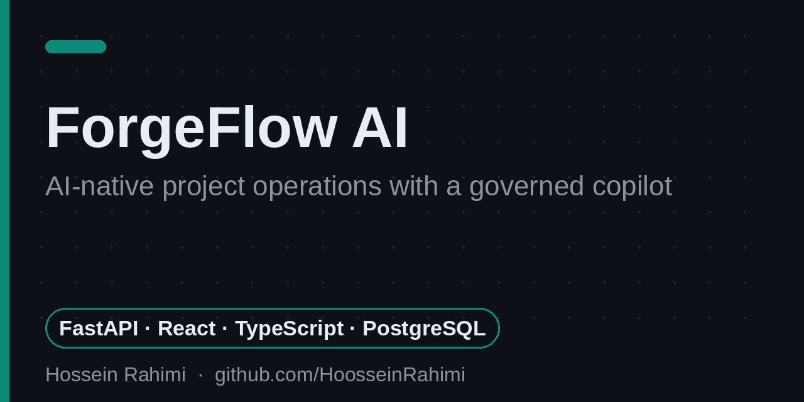

Governed AI systems
ForgeFlow AI — community edition
- Problem
- Teams want AI help in project operations without giving it unchecked write access to repositories and private data.
- Architecture
- React cockpit → FastAPI control plane → bounded public-documentation retrieval → governed action gate → demo execution.
- Hard part
- Keeping the public edition useful while excluding private team databases, credentials, grading records and production write automation.
- Result
- Single-service Docker image, Compose startup, green CI and a live showcase with propose → approve/reject flow.